- Módulo: Sistemas Operativos
- Título del trabajo Usuarios en el AD (Active directory)
- Componentes del grupo: Eliot Farrais García
- Curso Académico: 2013/2014
- Fecha de entrega: 24 de abril de 2014
Ejecutamos "dcpromo.exe" en la consola de comandos. En la ventana que nos sale le damos siguiente, nos sale esto, le damos a siguiente:
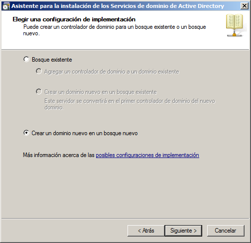En la siguiente ventana lo dejamos como está:
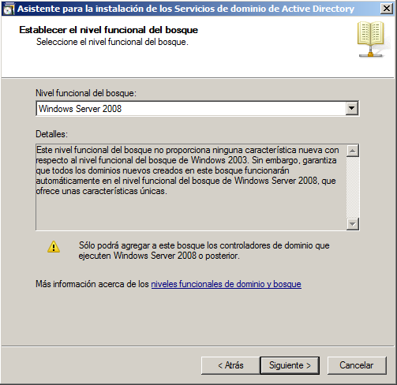En la siguiente ventana lo dejamos como está:
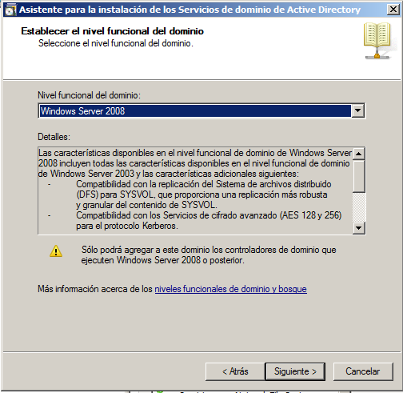En la siguiente ventana lo dejamos como está:
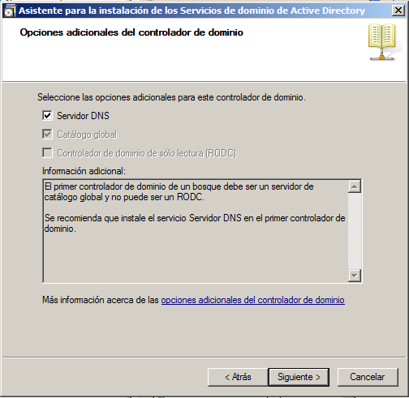En la siguiente ventana lo dejamos como está:
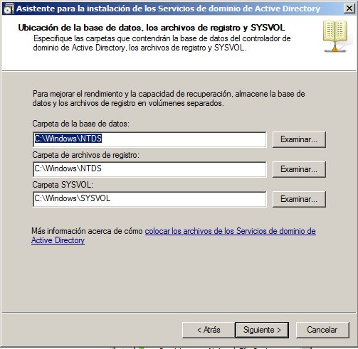Dejando todas las configuraciones por defecto, se empieza a instalar el AD (Active Directory). Una vez finalizado, reiniciamos el sistema:
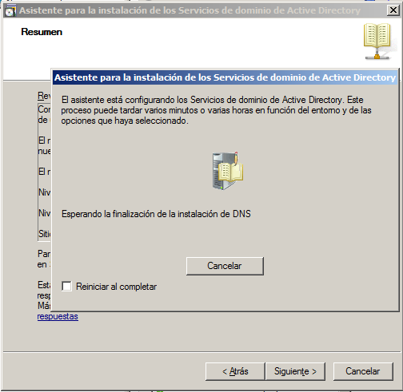Para unirnos al dominio, iremos a las propiedades del sistema en el cliente. Una vez ahí nos vamos a configuración avanzada del sistema
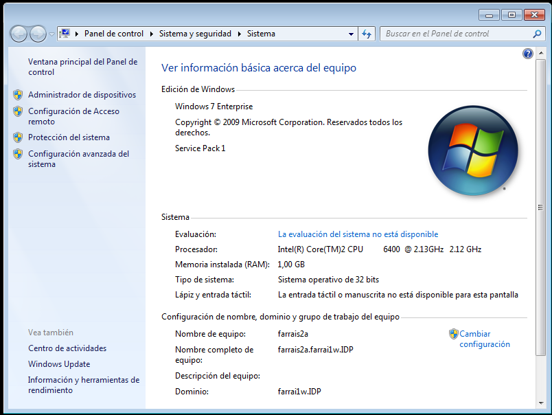Buscaremos En la parte superior nombre de equipo, y vamos a cambiar. Selecionamos Dominio, y escribiremos el nombre del dominio.
Si lo hemos hecho todo correctamente nos saldrá un mensaje de unión al dominio correctamente.es importante saber que para la unión al dominio
debemos poner la ip del servidor como dns primario, y también tener la misma zona horaria y hora del sistema, en el servidor y cliente
Comprobamos que estamos unidos al dominio
Equipo administrador:
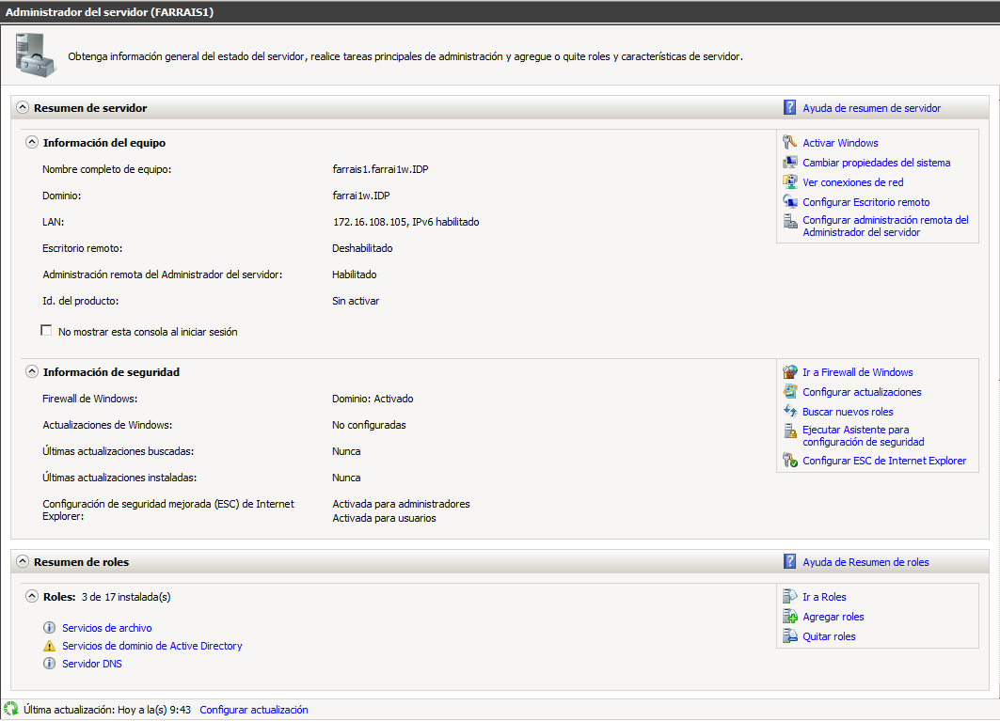
Equipos clientes:
Equipo A
Equipos B
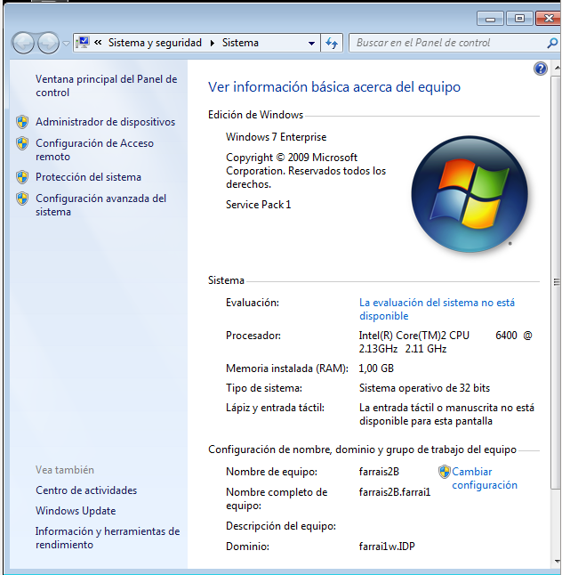
Para agregar un usuario, ejecutamos por la consola el comando: dsa.msc.
En la parte izquierda, en la pestaña users, pulsamos clic derecho, y en el submenu vamos a: Nuevo -> Usuario
Agregando así a todos los usuarios
Para agregar un grupo, ejecutamos por la consola el comando: dsa.msc.
En la parte izquierda, en la pestaña users, pulsamos clic derecho, y en el submenu vamos a: Nuevo -> grupo
Agregando así a todos los grupos necesarios
Nos quedan así todos los usuarios y grupos añadidos
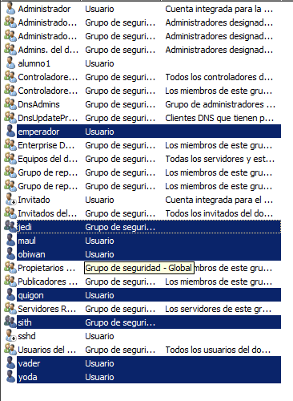Tendremos que compartir una carpeta en la red, donde se guardarán los perfiles, terminando el nombre en $.
(El dolar "$" hará que la carpeta compartida esté oculta). Como por ejemplo perfiles$. Esta carpeta debe tener permisos de Control total para todos
Ejecutaremos el comando dsa.msc, y en el usuario que queramos configurar le daremos clic derecho e iremos a Propiedades.
para nuestro ejemplo usaremos el usuario obiwan. una vez que se nos abre una ventana, en la parte superior buscamos perfil
Una vez en perfil, en ruta de acceso colocamos la dirreción de red al carpeta compartida más la variable %USERNAME%, quedando así:
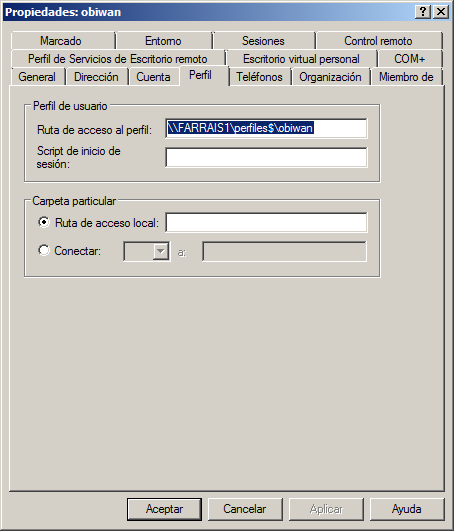Iniciamos sesión en el cliente para comprobar que efectivamente, no nos da error la configuración
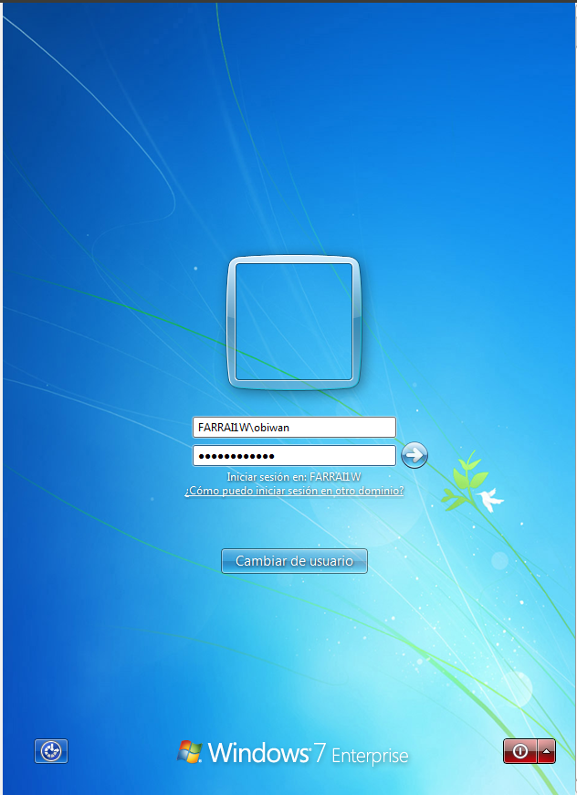Esta configuración nos permite no realizar modificaciones en los usuarios
Para esto debemos primero debemos entrar en un cliente, como administradores
Una vez dentro nos situamos en Inicio -> Equipo, y le damos un clic derecho. En el submenú le damos un clic izquierdo a Propiedades
En las propiedades del sistema, en la parte izquierda superior, le hacemos un clic en Configuración avanzada del sistema. Le damos configuración de usuarios
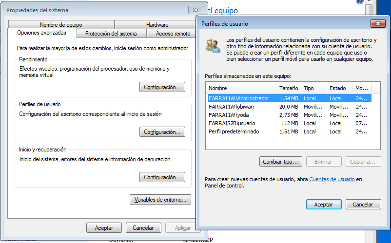Selecionamos perfil predeterminado, y damos un clic izquierdo en Copiar a... . Elejimos la ruta de red y la carpeta donde irá el perfil obligatorio
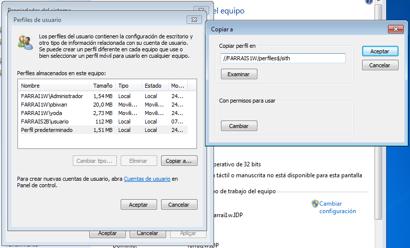Debajo, en los permisos, le damos a cambiar y elejimos Usuarios autentificados.Luego le damos a aceptar y nos saldrá un mensaje como que la copia del perfil se ha hecho correctamente
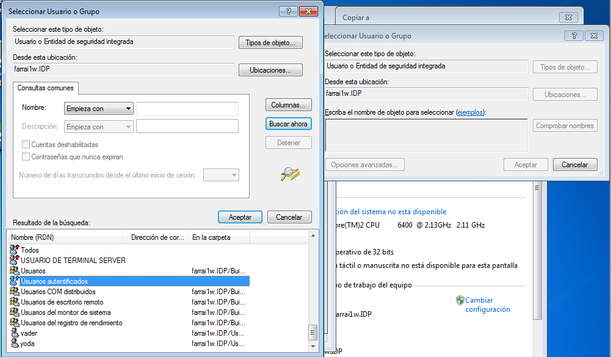Ahora nos vamos al servidor, y en la carpeta compartida donde se guardan los perfiles, tiene que estar el perfil que hemos copiado anteriormente.
Buscamos el archivo ntuser.dat y renombramos su extensión a ntuser.man
Creamos el usuario como hacemos para crear un usuario movil descrito en el apartado anterior.
cuando especifiquemos la ruta elejiremos la ruta en la que copiamosel perfil predeterminado en el servidor
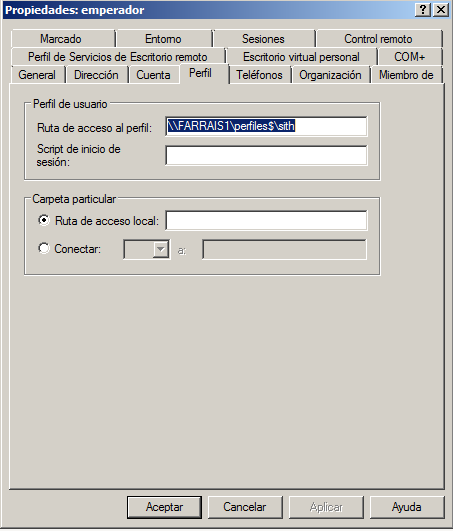Para hacer los perfiles moviles obligatorios, se usó la siguiente documentación, adaptandola a la practica:
http://support.microsoft.com/kb/973289/es